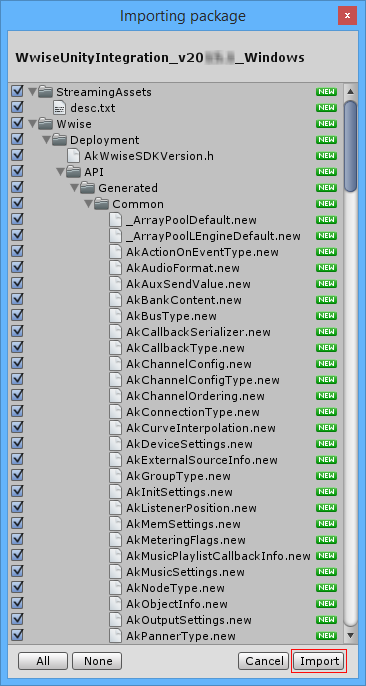
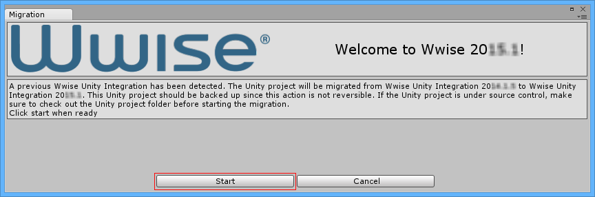

Updating/upgrading the Wwise Integration Package to a newer version

| Warning:
|
This installation procedure assumes that you already have a Unity project containing a previous Wwise Integration package. For new installations, please refer to the Installing a Wwise Integration Package for the first time page. Unlike other Unity plug-ins, you need to leave the previous Wwise Integration package installed in order to upgrade it to a newer version. The UnityPackage will install the new features and bug fixes, and then migrate the previous Wwise Integration to the newer version. Do not delete the previous Wwise Integration before installing the new one as it will result in losing all the hard work you've done integrating Wwise audio in your game.
The upgrade is done in a 2-step process. First you need to update your Wwise project to the new version you wish to use and then you need to do the same with your Unity project.
- Updating your Wwise project to the new version:
- Launch the Wwise version that matches the new Wwise Integration package(s) you intend on using in Unity. (In other words, "Wwise v2015.1" would go along with the "WwiseUnityIntegration_v2015.1_platform.unitypackage".)
- Open your Wwise Project.
- Answer 'Yes' when prompted to update your Wwise project to the current version.
- Once completed, make sure to regenerate your Wwise SoundBanks to be ready to carry on with your work after updating the Unity project to the new Wwise version.
- Updating your Unity project to the new Wwise version:
- Launch the Unity Editor and open your Unity project. Do not play/preview any scene.
- Start by importing the Wwise Unity Integration UnityPackage file for your authoring platform version, "WwiseUnityIntegration_WwiseVersionNumber_Mac" or "WwiseUnityIntegration_WwiseVersionNumber_Windows". Double-click the WwiseUnityIntegration.unitypackage file, or in Unity, use the
Assets > Import Package > Custom Package…menu.Note: This step is crucial if you want to preview your game in the Unity Editor. If some members of your team work on Unity Mac and others on Windows, make sure to install both the "Mac" and "Windows" UnityPackage.
- Make sure that all assets from the package are selected and click
Import.Note: During the import, expect to see some errors, warnings, and other messages generated by Unity in the console. This is normal. - After the import, a
Migrationwindow may appear based on the changes required between Wwise versions. In the event where the previous Wwise Integration was imported for more than one platform, this dialog will include a list of all the other platforms that will automatically be removed and for which you will have to install the new Wwise Unity Integration package in your Unity project.

- After the import, a
- Click
Start Migration.- The Wwise Integration will be migrated.
Note: During the migration, you can expect to see some errors, warnings and other messages generated by Unity in the console. This is normal.
- The Wwise Integration will be migrated.
- Once complete, the Migration window will close and a "Migration completed successfully" entry will be displayed in the Unity Console.
- If you have multiple target platforms to support, repeat the import process with the other platform UnityPackage. Since the migration is done during the first import of the new Wwise Unity Integration, the
Migrationdialog won't be displayed during the subsequent platform installations.
Note: For Android, if some members of your team work on Unity Mac and others on Windows, make sure to install both the "Mac" and "Windows" versions of the Android UnityPackage.